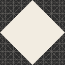
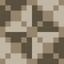
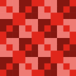
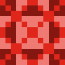
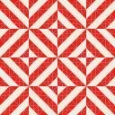
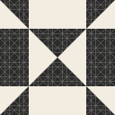
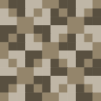
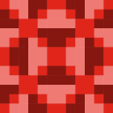

เครื่องมือ
เครื่องมือแบบโต้ตอบของ La Livrée d'Hermès — ประพันธ์ ดูภาพ พิมพ์ เข้ารหัส หน้าที่ระบุ “(หน้าภาษาฝรั่งเศส)” ยังไม่ได้แปล
ภาษาอื่น: Français · English · Español · 简体中文 · Русский · Português · हिन्दी

สร้างลวดลาย
ประกอบลวดลายผ้าของคุณเองจากภาพ 60 ภาพของอี้จิง

Magic quadricolore
ลวดลาย 64 แบบของฉักลักษณ์ ปรับแต่งได้และดาวน์โหลดได้ในความละเอียดสูง

แกลเลอรีสามสี
ลวดลายรวมเป็นหนึ่ง สร้างจากการผสมโทนสี — เลือกลวดลายเพื่อดูการปูลาย
แกลเลอรีสองสี
ลวดลายสองสี 142 แบบที่สร้างจากแกนและปิดบนลูกบาศก์ — เกรนการอ่าน การปูลาย การส่งออก

ลวดลาย SVG
ดาวน์โหลดแผ่นลายสำหรับพิมพ์ใน 4 หมวดของการผสมเส้น ในรูปแบบ SVG
ลวดลายสองสี
ประกอบเซลล์ขนาด 12×12 หกระดับ แต่ละระดับมีตระกูลและโทนสีของตัวเอง
ลวดลายสองสี v2
การแบ่งเส้นทแยงครั้งที่สอง (YA/AY) คำศัพท์และสถานะของการเลื่อนครึ่งคาบ — ควบคู่กับเครื่องมือ v1 (หน้าภาษาฝรั่งเศส)

ไซแมติกส์
การปูลายที่มีความถี่เชิงพื้นที่ใกล้เคียงกับเสียงที่คุณเปล่งออกมามากที่สุด

วอลเปเปอร์
วอลเปเปอร์ลายผ้าเต็มจอ ตอบสนองต่อเสียง หรือในโหมดสมาธิที่ปรับจังหวะได้
มองเห็นดนตรีของคุณ
เลือกเพลง ไฟล์ หรือไมโครโฟน: หน้านี้จะค้นหาลวดลายของ La Livrée d’Hermès ที่สเปกตรัมใกล้เคียงกับเสียงมากที่สุด
แกลเลอรีแอนิเมชัน
แอนิเมชันของคอลเลกชันพื้นลาย แบ่งเป็นหกกลุ่ม ดู ดูตัวอย่าง และดาวน์โหลดเป็น MP4

แผ่นลาย 360 แผ่น
ทำการทำนาย แล้วดาวน์โหลดแผ่นลายที่พร้อมพิมพ์

ตัวเข้ารหัส
การเข้ารหัสซ่อนข้อมูลเชิงเรขาคณิตด้วยตัวอ้างอิงคู่ กางเขนหูหิ้ว และฌักการ์